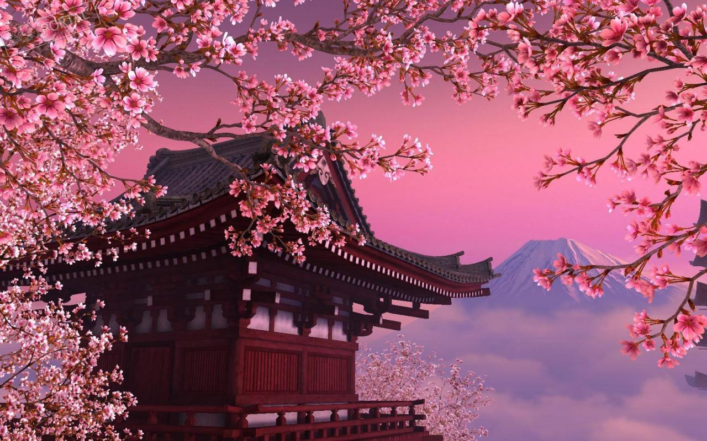

Современная Япония и её обычаи
Япония, или «Страна восходящего солнца», несомненно, является одним из самых интересных мест в мире. Захватывающая культура и нетрадиционный образ жизни, необычное сочетание традиций и современности, синтез природы и технического прогресса.
Немного о Японии
Япония – это одна из самых необычных стран мира. Чего хотя бы стоит тот факт, что еще в начале прошлого века она была закрытой для остального мира (да и сейчас отличается строгими нравами), а теперь здесь бушует технологический прогресс. В итоге, у многих людей возникает желание узнать о Японии больше или даже отправиться туда на отдых.
